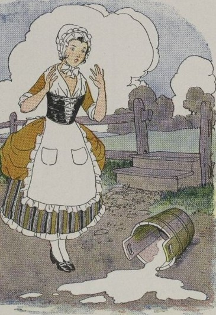

La Laitière et le Pot au lait
Perrette, sur sa tête ayant un pot au lait
Bien posé sur un coussinet,
Prétendait arriver sans encombre à la ville.
Légère et court vêtue, elle allait à grands pas,
Ayant mis ce jour-là, pour être plus agile,
Cotillon simple et souliers plats.
Notre laitière ainsi troussée
Comptait déjà dans sa pensée
Tout le prix de son lait ; en employait l’argent ;
Achetait un cent d’œufs ; faisait triple couvée :
La chose allait à bien par son soin diligent.
Il m’est, disait-elle, facile
D’élever des poulets autour de ma maison ;
Le renard sera bien habile
S’il ne m’en laisse assez pour avoir un cochon.
Le porc à s’engraisser coûtera peu de son ;
Il était, quand je l’eus, de grosseur raisonnable :
J’aurai, le revendant, de l’argent bel et bon.
Et qui m’empêchera de mettre en notre étable,
Vu le prix dont il est, une vache et son veau,
Que je verrai sauter au milieu du troupeau ?
Perrette là-dessus saute aussi, transportée :
Le lait tombe ; adieu veau, vache, cochon, couvée.
La dame de ces biens, quittant d’un œil marri
Sa fortune ainsi répandue,
Va s’excuser à son mari,
En grand danger d’être battue.
Le récit en farce en fut fait ;
On l’appela le Pot au lait.
Quel esprit ne bat la campagne ?
Qui ne fait châteaux en Espagne ?
Picrochole, Pyrrhus, la laitière, enfin tous,
Autant les sages que les fous.
Chacun songe en veillant ; il n’est rien de plus doux :
Une flatteuse erreur emporte alors nos âmes ;
Tout le bien du monde est à nous,
Tous les honneurs, toutes les femmes.
Quand je suis seul, je fais au plus brave un défi ;
Je m’écarte, je vais détrôner le sophi ;
On m’élit roi, mon peuple m’aime ;
Les diadèmes vont sur ma tête pleuvant :
Quelque accident fait-il que je rentre en moi-même ;
Je suis Gros-Jean comme devant.